P01 · Prompt 开发 · Claude 调试 · Playground
从零创建一个 Prompt，选 Claude 跑通调试，提交版本，再到 Playground 试跑。 截图红框为操作重点。上级：总目录。
🎯 本课目标（先读再动手）
- 从零创建一条可保存的 Prompt，进入三栏开发调试页。
- 写好 System / User 模板，选择 Claude，成功跑通一次调试。
- 把满意的草稿提交成版本，便于实验引用和回滚。
- 会用 Playground 做不落库的快速试跑，并区分它与「Prompt 开发」的差异。
打开 Prompt 开发列表
目的：进入 Prompt 的「家」——所有正式 Prompt 都在这里创建、编辑、管理。
作用：这是后续创建、调试、提交版本的统一入口。认准这个页面，才不会误跑到 Playground 或其它模块。
- 确认已登录（P00 完成）
- 左侧侧栏点 Prompt 开发（第一项，通常默认就在这里）
- 若是空账号，中间会显示「暂无 Prompt」和插画
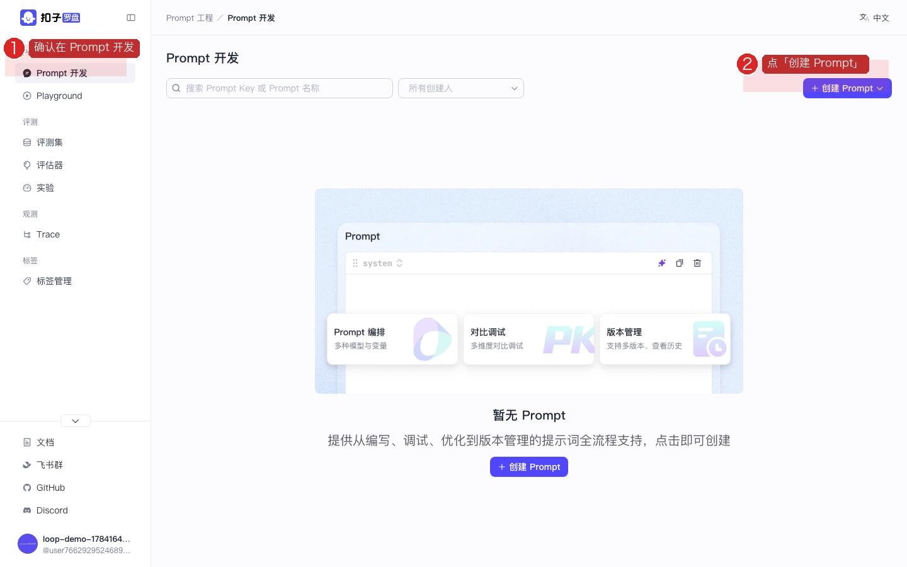
图：按 1→2：确认在 Prompt 开发 → 点右上角「创建 Prompt」。
创建空白 Prompt
目的：新建一条可落库的 Prompt 草稿（有 Key、名称），并进入三栏调试工作台。
作用：创建成功后，平台会分配一个 Prompt 实体；你才能写模板、挂模型、保存版本。Key 是程序引用用的「身份证」，名称给人看。
- 点右上角蓝色按钮 + 创建 Prompt
- 弹出菜单里选 空白 Prompt（不要点空白处关掉菜单）
- 在弹窗中填写：
- Prompt Key（必填）：英文开头，只能字母数字下划线点。例：
demo_greeting - Prompt 名称（必填）：中文也行。例：
Claude问候演示 - Prompt 描述（可选）：写一句用途说明
- Prompt Key（必填）：英文开头，只能字母数字下划线点。例：
- 点右下角 确认
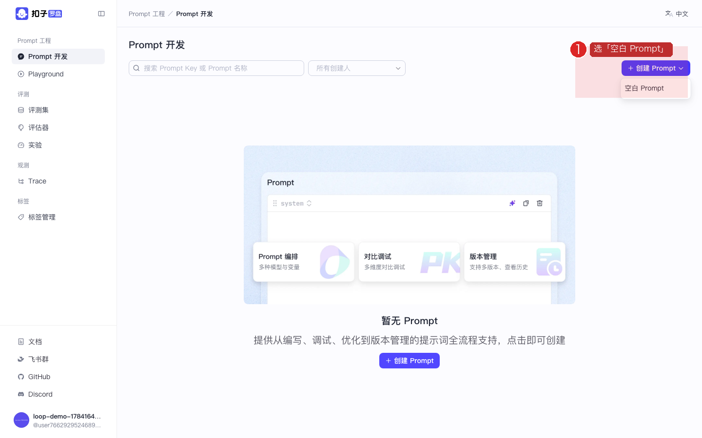
图：按顺序点「空白 Prompt」（图上数字 1）。
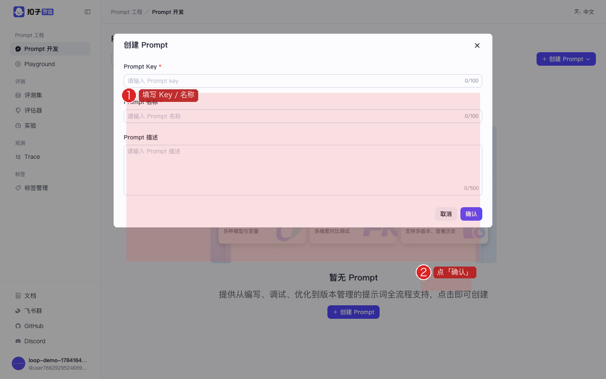
图：按 1→2：填写 Key/名称 → 点「确认」。
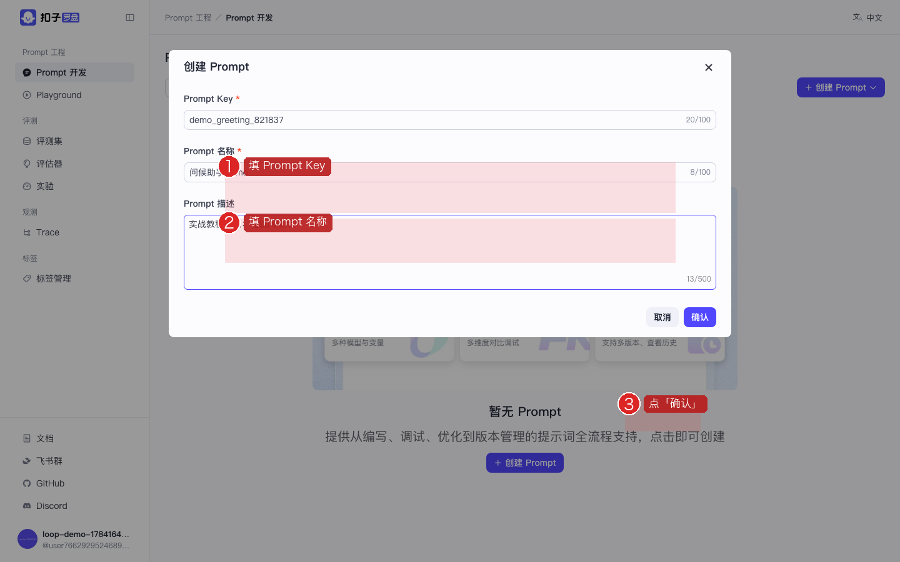
图：按 1→2→3：填 Key → 填名称 → 点「确认」进入开发页。
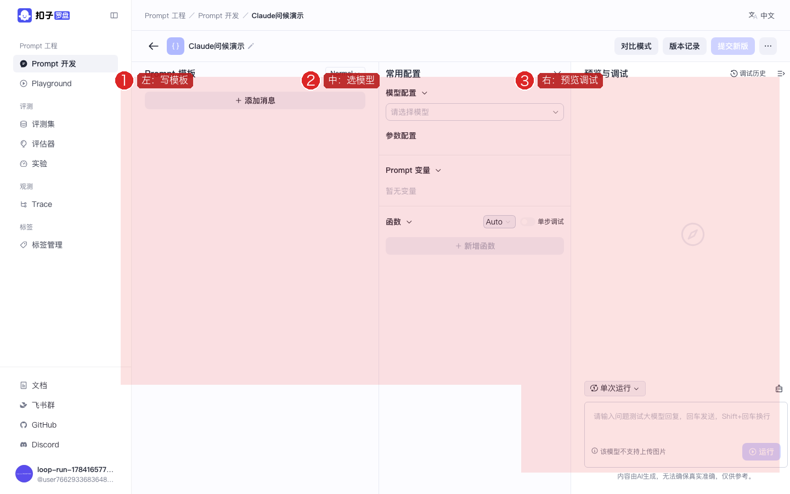
图：按 1→2→3 认三栏：左模板 / 中模型 / 右预览调试。
1abc、我的prompt 都不行。
写 System / User 消息模板
目的：用自然语言规定模型的角色、任务，以及用户侧输入长什么样。
作用：模板就是发给大模型的「剧本」。空内容直接运行会被 Claude 拒绝（400）；写好后，每次点「运行」都会按这套内容（或变量替换后）去调用模型。
- 在左栏找到标着 System 的输入框
- 点进去，输入例如：
你是礼貌助手。请用一句中文问候用户。 - 若还没有 User 消息：点 + 添加消息，角色选 User（或默认追加）
- 在 User 框输入例如：
我叫小明 - 也可以用变量写法：
{{user_name}}（后面再在变量区赋值）
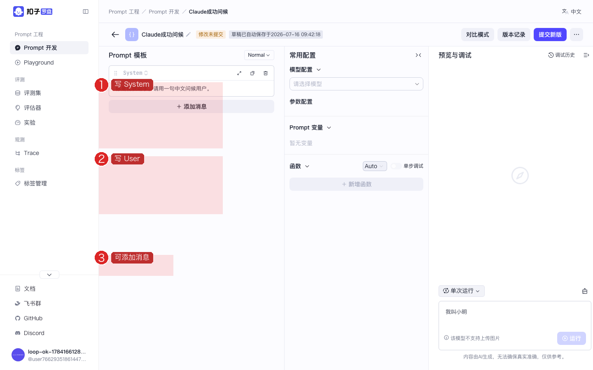
图：按 1→2→3：写 System → 写 User → 可继续添加消息。
选择 Claude 并点击运行
目的：把 P00 已配置好的 Claude 挂到当前 Prompt，并发起一次真实 API 调用，验证模板是否可用。
作用：这是本课的「通电时刻」：右栏会显示模型回复、耗时、Tokens。成功说明模型链路通了；失败则要回头查 Key / 参数 / 空消息等问题。
- 看中间栏 模型配置
- 点「请选择模型」下拉
- 在列表里点 Claude Sonnet（名称以你在 yaml 里写的
name为准） - 参数区会出现
max_tokens、temperature等滑条——新手可先不改 - 到右栏底部输入框（可选）再写一句测试话，或直接依赖模板里的 User 消息
- 点蓝色 运行
- 等待 2～10 秒，右栏应出现助手回复，并显示耗时与 Tokens
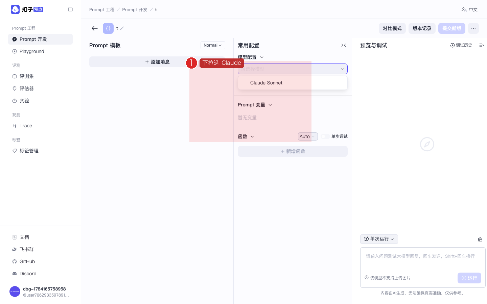
图：按数字 1 在下拉里选 Claude Sonnet（说明 P00 的 yaml 已生效）。
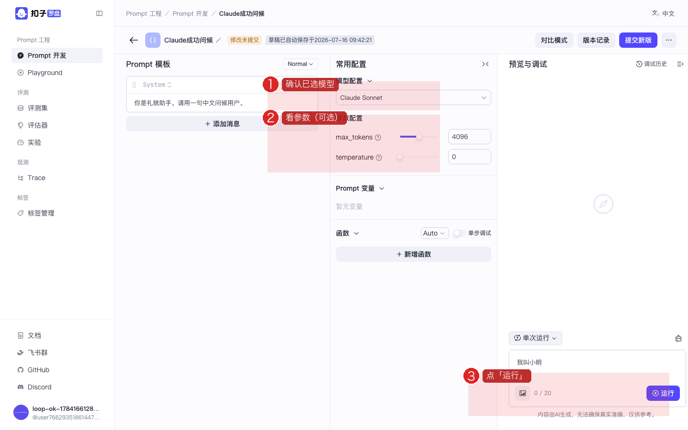
图：按 1→2→3：确认模型 → 看参数 → 点「运行」。运行是灰的就检查是否已选模型、消息是否为空。
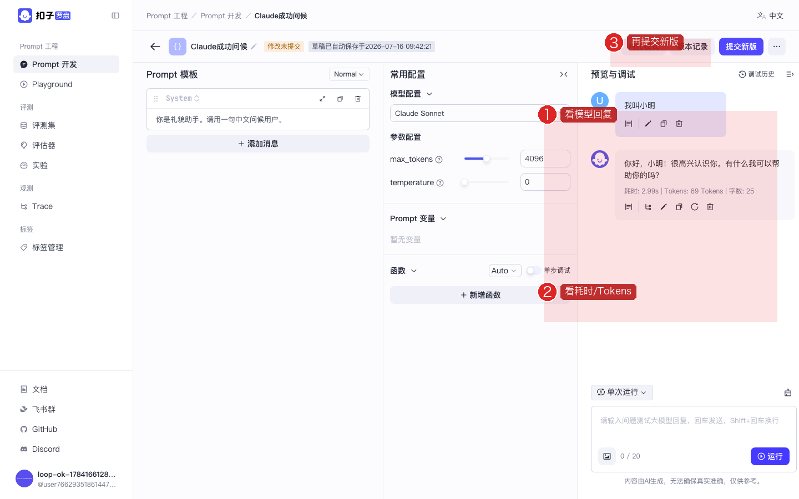
图：按 1→2→3：看回复 → 看耗时/Tokens → 满意后再提交新版。
temperature and top_p cannot both be specified → 回到 yaml 删掉其中一个参数后 restart app。system/user messages must have non-empty content → 模板消息是空的，先写字再运行。下拉没有模型 → yaml 没配好或 app 没重启。
提交新版本
目的：把当前调试满意的草稿，固化成一个带版本号的快照。
作用：版本可回滚、可对比、可被实验精确引用（例如永远用 0.0.1）。只改草稿不提交，别人/实验可能拿到的仍是旧内容或不稳定草稿。
- 确认调试结果满意
- 点顶部右侧紫色/蓝色按钮 提交新版
- 在弹窗填写版本号，例如
0.0.1（按你们团队规范即可） - 可写变更说明（可选）
- 点确认 / 提交
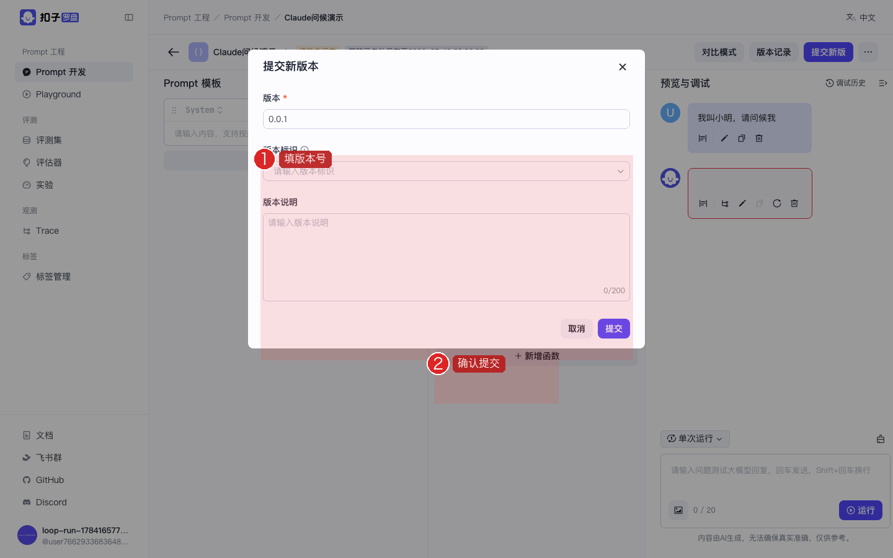
图：按 1→2：填版本号 → 确认提交。
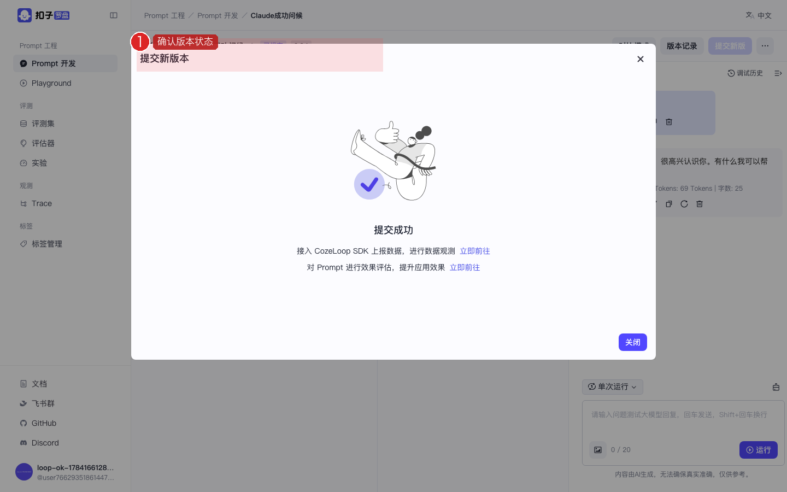
图：数字 1：确认顶部版本状态已变化；可用「版本记录」查看历史。
用 Playground 快速试跑
目的：在不创建正式 Prompt 的情况下，快速试一段提示词 / 模型效果（像草稿纸）。
作用：降低试错成本：想法不定型时先用 Playground；满意后再「快捷创建」落成正式 Prompt。和「Prompt 开发」能力相近，但默认不强调版本管理。
- 侧栏点 Playground
- 左栏写 System（例：
用一句话介绍你自己：你是 Anthropic 的 Claude。） - 中间选 Claude Sonnet
- 点右下角 运行
- 满意后可用顶部 快捷创建 存成正式 Prompt（可选）
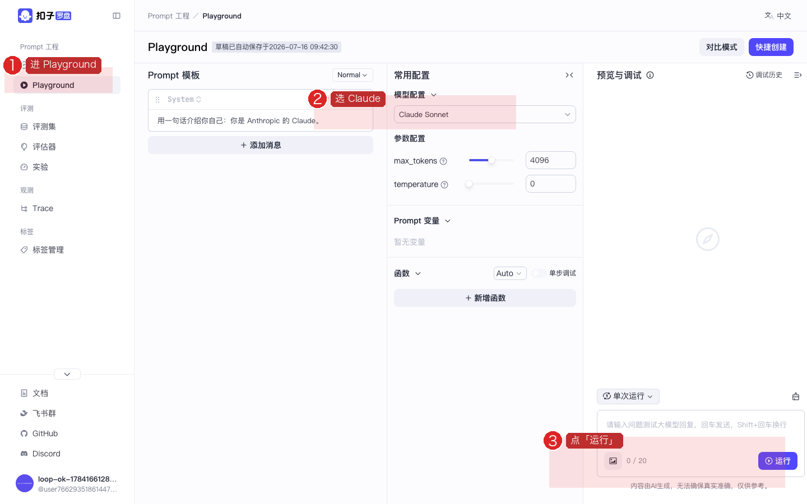
图：按 1→2→3：进 Playground → 选 Claude → 点「运行」。默认不落库。
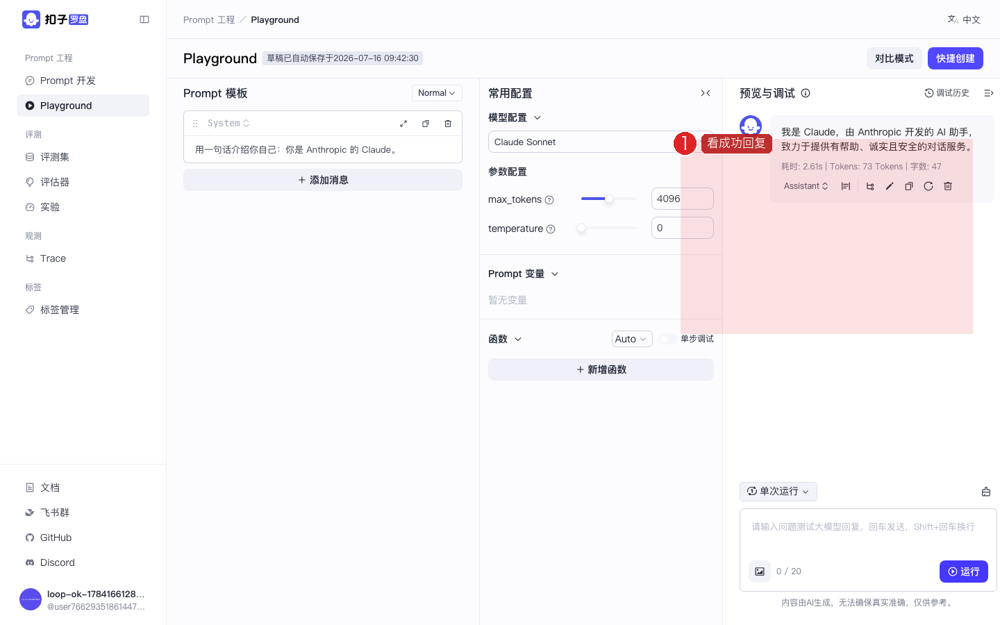
图：数字 1：看 Playground 成功回复。
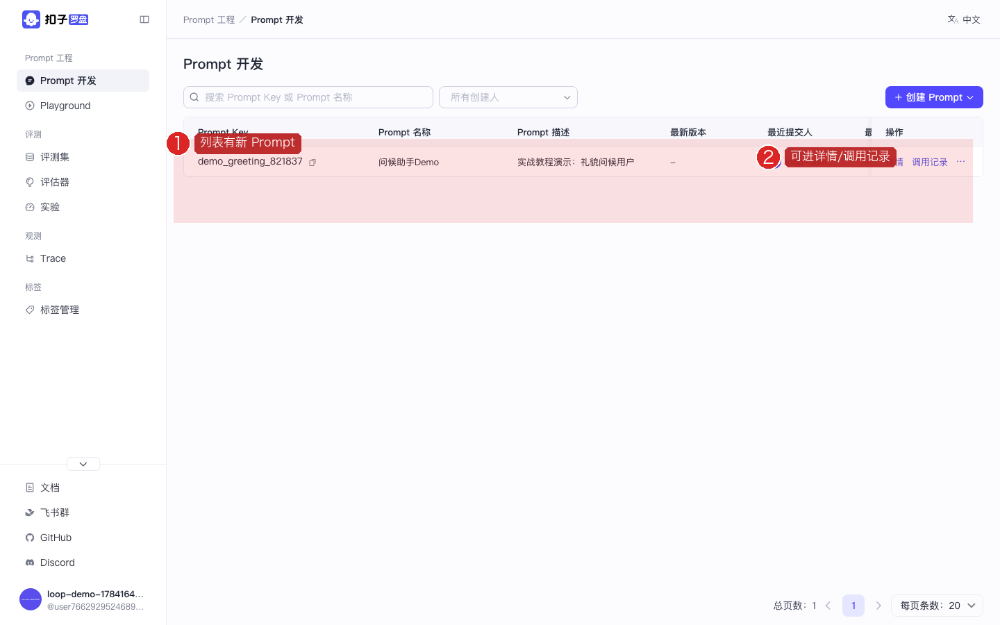
图：按 1→2：确认列表有新 Prompt → 可进详情/调用记录（跳 Trace）。